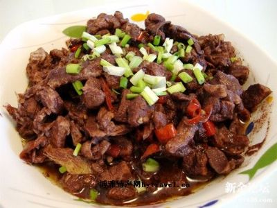
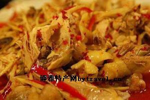
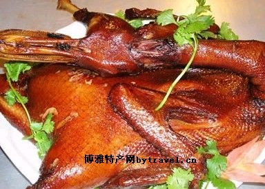
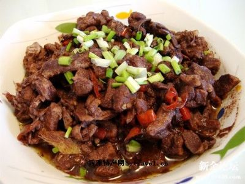
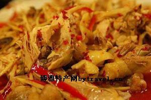
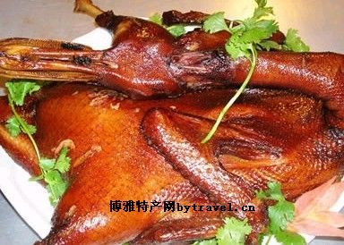

教学班级：通信1902
姓名：兰清勇
学号：201916180225
 自我介绍：作为一个00后，游戏和影音是必不可少的，有空的时候就跟朋友打打游戏，看看电影听听歌啥的，偶尔有时候也会出去散散步。性格有点内向，但是对待朋友很热情。
家乡美食介绍：我的家乡在湖南永州，特色美食都是百度来的哈哈
一.永州血鸭。
永州血鸭是湖南永州的一款传统名菜。吃血鸭，最好配冰啤酒。那简直是水火交融———直冲天灵盖的烈火被百丈瀑布浇熄了，轻烟袅袅，萦荡心头，真有说不尽的痛快淋漓。当然，你倘若不喝酒，配上一碗萝卜炖排骨汤也行。

二.东安鸡。
“东安鸡”是一道历史悠久、驰名中外的美味佳肴，被列为国宴菜谱之一、八大湘菜之首。“东安鸡”经历了三个朝代的演变。

三.零陵板鸭。
零陵板鸭起源于清朝末年，素以香、肥、脆、嫩而闻名。制做时，选用二斤半以上的肥嫩鸭子，宰后去毛，取出内脏，然后按照每只鸭子一两半盐、一两烧酒、半两酱油和适量的五香粉混合在一起并拌匀，遍涂鸭体内外，放在缸内腌一天、翻缸后再腌一天，使佐料全部渗进鸭肉后，拿出麻绳拴住鸭鼻，用竹皮撑开腹部，加力压平，日晒一到二天，挂在通风处吹二十天左右即成，每年冬至节前后制作的板鸭既耐藏，又香脆。

自我介绍：作为一个00后，游戏和影音是必不可少的，有空的时候就跟朋友打打游戏，看看电影听听歌啥的，偶尔有时候也会出去散散步。性格有点内向，但是对待朋友很热情。
家乡美食介绍：我的家乡在湖南永州，特色美食都是百度来的哈哈
一.永州血鸭。
永州血鸭是湖南永州的一款传统名菜。吃血鸭，最好配冰啤酒。那简直是水火交融———直冲天灵盖的烈火被百丈瀑布浇熄了，轻烟袅袅，萦荡心头，真有说不尽的痛快淋漓。当然，你倘若不喝酒，配上一碗萝卜炖排骨汤也行。

二.东安鸡。
“东安鸡”是一道历史悠久、驰名中外的美味佳肴，被列为国宴菜谱之一、八大湘菜之首。“东安鸡”经历了三个朝代的演变。

三.零陵板鸭。
零陵板鸭起源于清朝末年，素以香、肥、脆、嫩而闻名。制做时，选用二斤半以上的肥嫩鸭子，宰后去毛，取出内脏，然后按照每只鸭子一两半盐、一两烧酒、半两酱油和适量的五香粉混合在一起并拌匀，遍涂鸭体内外，放在缸内腌一天、翻缸后再腌一天，使佐料全部渗进鸭肉后，拿出麻绳拴住鸭鼻，用竹皮撑开腹部，加力压平，日晒一到二天，挂在通风处吹二十天左右即成，每年冬至节前后制作的板鸭既耐藏，又香脆。
